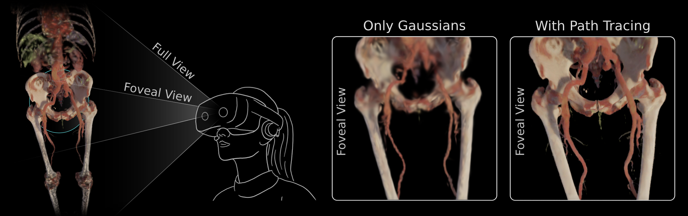

<section>
    <div class="container">

        <hr>
        <h4 id="2026">2026</h4>
        <hr>

        <div class="row">
            <div class="col-sm-12 col-md-4 col-lg-4">
                <div class="row">
                    
                    <br>
                    <span class="papertitle">Hybrid Foveated Path Tracing with Peripheral Gaussians for Immersive Anatomy</span>
                    <br>
                    <div class="paper-authors">
                        <span style="font-weight: lighter">C. Kleinbeck, L. Theelke, </span>
                        <span>H. Schieber</span>,
                        <span style="font-weight: lighter"> U. Eck, R. Eisenhart-Rothe, D. Roth</span>
                    </div>
                    <br>
                    <span>Accepted · IEEE VR 2026</span>
                    <div class="row">
                        <div class="col-md-6 col-lg-6 col-sm-6">
                            <a class="btn btn-dark w-100" data-bs-toggle="collapse" href="#collapseFoVGS" role="button"
                               aria-expanded="false" aria-controls="collapseFoVGS">
                                Abstract
                            </a>
                        </div>
                        <div class="col-md-6 col-lg-6 col-sm-6">
                            <a class="btn btn-dark w-100"
                               href="https://arxiv.org/pdf/2601.22026">Arxiv</a></div>
                    </div>
                    <div class="collapse" id="collapseFoVGS">
                        <div class="card card-body">
                            <p>
                                Volumetric medical imaging offers great potential for understanding complex pathologies.
                                Yet, traditional 2D slices provide little support for interpreting spatial
                                relationships, forcing users to mentally reconstruct anatomy into three dimensions.
                                Direct volumetric path tracing and VR rendering can improve perception but are
                                computationally expensive, while precomputed representations, like Gaussian Splatting,
                                require planning ahead. Both approaches limit interactive use.
                                We propose a hybrid rendering approach for high-quality, interactive, and immersive
                                anatomical visualization. Our method combines streamed foveated path tracing with a
                                lightweight Gaussian Splatting approximation of the periphery. The peripheral model
                                generation is optimized with volume data and continuously refined using foveal
                                renderings, enabling interactive updates. Depth-guided reprojection further improves
                                robustness to latency and allows users to balance fidelity with refresh rate.
                                We compare our method against direct path tracing and Gaussian Splatting. Our results
                                highlight how their combination can preserve strengths in visual quality while
                                re-generating the peripheral model in under a second, eliminating extensive
                                preprocessing and approximations. This opens new options for interactive medical
                                visualization.
                            </p>
                        </div>
                    </div>
                </div>
            </div>
        </div>
    </div>
</section>